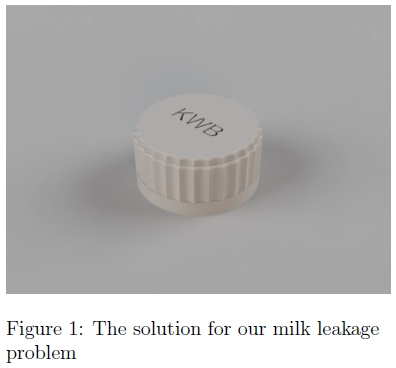
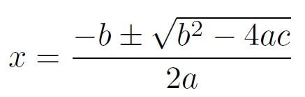

Lab 4: Introduction to LaTeX
This lab was all about LaTeX, a markup tool to create articles, books or scientific reports.
Having no previous experience with the TeX typesetting system this lab was esspecially interesting for me.
LaTeX documents have to be compiled before it's possible to actually see the layout of the page, pictures and references.
Getting started with LaTeX
-
an introduction
In the first part of the lab I learned all about how a general latex document is structured. It has a preamble which sets document properties and which
can be used to import additional features. For example a preamble would define the title, author and date.
An example preamble:
\title{Hello World!}
\author{John Doe}
\date{\today}
In the content part of the document the content of the document is placed.
It seems to begin with the \begin{document} command and ends with the \end{document} command.
A basic content of a LaTeX document could be the following:
\begin{document}
Hello World!
\end{document}
-
The document class
To create a sample LaTeX document which uses a 12 pt font, two columns and the document class the following code would be needed:
\documentclass[12pt,a4paper,twocolumn]{article}
\begin{document}
The world is a beautiful but dangerous place and writing code is
a lot less dangerous than many other activities.
But to truly experience the beauty of nature
it is essential to leave the house at least once a month.
\end{document}
Sectioning of content
- To section the content of a LaTeX document there are several commands to use. For documents of type book or report the top-level command is the
\chapter, articles have the \section command as the top-level sectioning command. Every section has a text size dependent on the level
of the command, normally gets printed in bold and a number dependent on this. The sectioning of the document can be displayed upfront using the \tableofcontents command.
To include quotes in a document backtick and apostrophes are used like this:
``You are amazing''
Laying out content
- In LaTeX there are some embedded environments which can be used for the document to provide extended functionality. In this part we are starting the
enumerate and the itemize
environments to provide the functionality of using numbered and bullet pointed lists. It is pretty easy to use them, first it is necessary to start the environment and after
that the \item command can be used to add items to the list.
Figures
- Similar to this there is another environment to insert graphs or pictures into a document which means that in most cases this environment will be used.
This environment is not native to LaTeX which means I have to explicitly signal the compiler that I want to use the package with the
\usepackage{graphicx} command.
Similar to the different list environments, to include a picture in the document the figure environment first has to be started. Apparently these environments can also
be nested together to provide further functionality, for example a center environment can be placed inside a figure environment to center a picture.
I included a picture of a CAD project I did in my free time to text this functionality of LaTeX.
\begin{figure}[h]
\includegraphics[width=80mm]{/user/Downloads/cad.png}
\caption{The solution for our milk leakage problem}
\label{reflabel}
\end{figure}

Maths
-
It took me some time to get my head around the equation environment of LaTeX. Basically it allows the user to insert mathematical equations and variables into
every document using the equation environment. After reading through a few more documents I got to include the quadratic equation to include into the document.
\begin{equation}
x = \frac{-b \pm \sqrt{{b}^2 - 4ac}}{2a}
\end{equation}

Referencing
-
Apparently it is possible to reference a figure using the
\ref{reference} command.
Commands: